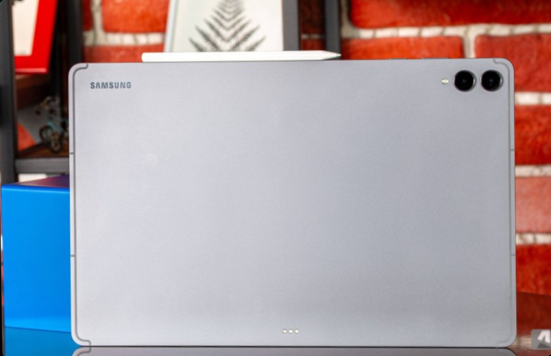
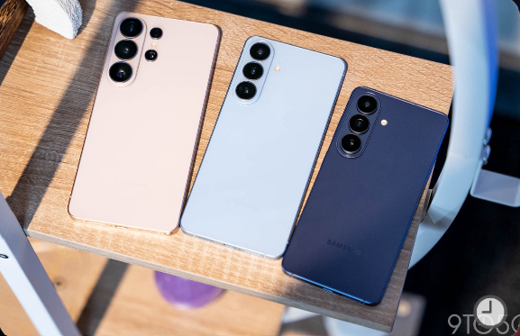

Breaking tech news, smart analysis, and future-ready insights—delivered fast.
YouTube began rolling out the Gemini Omni–powered Shorts Remix feature on May 19, making reimagining tools available in the YouTube app. The Remix tool lets users restyle clips or insert themselves into eligible Shorts by prompting Gemini to change a video’s style, add or alter people and background elements, or apply specific visual themes. Creators have control over remixing because they must enable the Remix button for their videos and can opt out of visual remix at any time. Google says remixed Shorts will carry visible watermarks, SynthID metadata, and links back to the original to mark AI-generated versions and help users trace source material. The announcement has drawn pushback from creators who say they do not want automated edits of their work and follows recent moves such as OpenAI’s Sora shutdown and YouTube’s expanded takedown and likeness-detection tools that aim to manage misuse..

Samsung has begun delivering the stable One UI 8.5 build to the Galaxy Tab S11 and Tab S11 Ultra in South Korea, replacing the month‑old tablet beta. The tablet firmware arrives with build codes X736NKOU5BZE3 for the base Tab S11 and X936NKOU5BZE3 for the Ultra. One UI 8.5 brings visual polish and new capabilities, most notably Apple AirDrop compatibility, a more customizable Quick Settings panel, and refinements to Galaxy AI features. Samsung typically expands updates from South Korea to other regions in staged waves, so broader distribution to eligible tablets is expected in the coming days. Users can check for the update on their Tab S11 series via Settings > Software update > Download and install, and the release follows earlier One UI 8.5 phone rollouts and ongoing One UI 9 beta testing for Galaxy S26 devices..

Multiple outlets reported Wednesday that an OTA firmware entry (build S741NKSU0AZE5) and model code SM‑S741N show Samsung is actively testing One UI 9 on the Galaxy S26 FE, which typically precedes a September release for FE models. Supply‑chain reporting and corroborating leaks say Samsung plans to expand the Galaxy S27 family to four models by early 2027, adding a 6.47‑inch 'S27 Pro' positioned as a compact phone with many Ultra‑class features, though Samsung has not confirmed this lineup. Leaks describe the S27 Pro as sharing high‑end components with the Ultra, including advanced processors and Privacy Display tech, while omitting S Pen support; these reports remain unconfirmed and sourced to ETNews and industry tipsters. High‑profile leaks from Ice Universe and others claim the Galaxy Z Fold 8 series may drop Privacy Display and S Pen support and show only modest crease improvements, a developing set of assertions that other specification leaks partly contradict. Samsung is adjusting pricing now, with confirmed discounts for S25 and S26 flagships during its AI Week sale, a short‑term market move tied to component cost pressures and inventory management that could influence launch strategies.